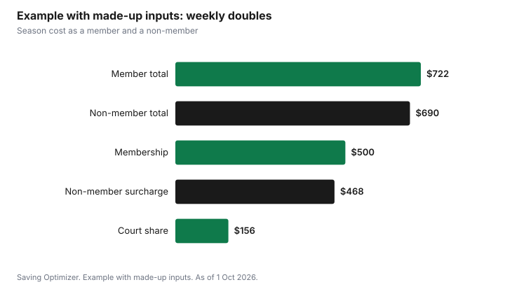

Sports · Canada
Indoor Tennis in Canada's Winter: Bubble Fees, Club Memberships and Municipal Courts
Winter tennis usually means a seasonal bubble or an indoor club, and most charge two things: a membership for the season and an hourly fee for each court booking. Non-members can often play but pay a surcharge. As an official reference, a 2025 City of Toronto report awarding the operation of a seasonal tennis bubble at Eglinton Flats Park lists first-season pricing of $530.10 for an adult membership with early registration, court fees of $15 to $26 an hour, and an extra $18 per person per hour for non-members. Splitting a court for doubles is the biggest saving, and a membership pays off only if you play often.
Key takeaways
- Toronto's Eglinton Flats bubble contract defines the season as October to April.
- Expect a membership plus hourly court fees, and a surcharge for non-members.
- Toronto Eglinton Flats first-season pricing: adult membership $530.10 early or $710.10 regular.
- Hourly court fees in that contract: $26 prime, $19 non-prime, $15 early bird; non-members pay $18 more per person.
- Doubles splits the court fee four ways.
- Example with made-up inputs: a member playing weekly doubles spends $722 a season.
How winter bubble memberships and court fees work
Air-supported bubbles go up over outdoor courts for the cold months. The City of Toronto's report on the Eglinton Flats contract says the operating season is October to April each year, and that the operator must offer public non-member priority court access and court time for City recreation programs at no additional cost. That mix of membership, pay-per-court and public access is common, but each facility sets its own rules.
| Fee | Early registration | Regular |
|---|---|---|
| Adult membership (18 to 59) | $530.10 | $710.10 |
| Senior membership (60+) | $494.10 | $674.10 |
| Youth membership (13 to 17) | $170.10 | $170.10 |
| Child membership (12 and under) | $30.00 | $50.00 |
| Fee | Amount |
|---|---|
| Prime time court, per hour | $26.00 |
| Non-prime court, per hour | $19.00 |
| Early bird court, per hour | $15.00 |
| Non-member additional fee, per person, per hour | $18.00 |
The report notes that all rates are to be reviewed and approved by the City's General Manager of Parks and Recreation, that price increases should generally be no more than inflation, and that the facility was planned to open for the fall 2026 season. Treat these as the contract's listed first-season prices, and confirm current prices with the operator before you register.
Club memberships versus pay-per-court
The key question is how often you will play. At the Eglinton Flats prices, a non-member pays $18 more per person per hour than a member. An adult who registers early pays $530.10 for the membership, so they need about 30 hours of play to recover it through avoided surcharges alone ($530.10 ÷ $18 = 29.5). Someone playing once a week for a 26-week season would just about break even; someone playing twice a week comes out well ahead. Members often also get earlier booking windows and access to leagues, which can matter as much as the price.
| Play per week | Hours over 26 weeks | Surcharges avoided | Recovers $530.10? |
|---|---|---|---|
| 1 hour | 26 | $468 | Not quite |
| 1.5 hours | 39 | $702 | Yes |
| 2 hours | 52 | $936 | Yes |
Municipal indoor programs
Some cities include indoor tennis in their recreation programs. In the Eglinton Flats contract, the operator gives City of Toronto Parks and Recreation set hours of court time for community programs at no additional cost, and offers priority hours for non-members. Check your city's recreation guide for registered tennis programs, which can be a cheaper way to get indoor court time and coaching in the same session. Community centre gyms may also offer drop-in badminton or pickleball if tennis courts are booked up.
Splitting court time
Court fees are per court, so doubles cuts the cost per player in half compared with singles. At a $26 prime-time hour, singles costs $13 each and doubles $6.50 each, before any non-member surcharge, which is per person.
| Court fee | Singles (2) | Doubles (4) |
|---|---|---|
| Prime, $26 | $13.00 | $6.50 |
| Non-prime, $19 | $9.50 | $4.75 |
| Early bird, $15 | $7.50 | $3.75 |
Booking the same court at the same time every week, sometimes called a permanent or contract court, helps a regular group. Ask whether the full season must be paid up front and what happens if a player drops out.
Lessons and clinics
Group clinics usually cost less per hour than private lessons and include court time. Ask whether the clinic price includes the court fee, how many players per coach, and whether non-members pay more. Private lessons make sense for a specific fix; clinics are better for regular practice and meeting partners.
| Question | Why it matters |
|---|---|
| Is there a membership, and when is early registration? | Early rates can save a lot |
| What are prime and non-prime hours? | Off-peak is cheaper |
| Do non-members pay a surcharge per person? | Changes the break-even |
| Can you book a permanent court? | Reliable weekly time |
| Do clinics include court time? | True cost per hour |
| What is the cancellation policy? | Missed bookings can still be charged |
Example with made-up inputs: a season budget
These numbers are an example with made-up inputs. They are not Eglinton Flats or any club's prices. An adult buys a $500 seasonal membership and plays 26 weeks of doubles at a $24 prime-time court split four ways, $6 each per week, or $156. They add a four-week clinic for $66. The season costs $722. As a non-member at an $18 surcharge, the same play would cost $156 + $468 + $66 = $690, so here the membership only makes sense if they also plan extra hours or value the booking access.
| Item | Member | Non-member |
|---|---|---|
| Membership | $500 | $0 |
| Court share, 26 weeks | $156 | $156 |
| Non-member surcharge, 26 hours at $18 | $0 | $468 |
| Clinic | $66 | $66 |
| Total | $722 | $690 |

A season budget
- Count how many hours a week you will realistically play from October to April.
- Get the membership, court and non-member fees from each facility.
- Work out break-even hours for the membership.
- Find a doubles group and split court fees.
- Register early if there is an early registration rate.
- Add clinics or lessons only where they include court time or fix a specific weakness.
For year-round racquet costs, compare with budget gyms that offer courts or classes.
Sources
- City of Toronto, Attachment 1 to report on award to Premier Racquet Clubs Corp. for operation of seasonal sports bubbles for tennis at Eglinton Flats Park, toronto.ca, 2025, as of 1 Oct 2026. Operating season, public access, City programming time, first-season membership and court fees, non-member fee, rate approval.
- The break-even tables and questions are planning tools written for this guide using the fees above.
- The membership, court and clinic costs in the example are an example with made-up inputs.
Frequently asked questions
How much does indoor tennis cost in winter?
It depends on the facility. A City of Toronto 2025 report on the Eglinton Flats tennis bubble lists first-season pricing of $530.10 for an early adult membership and court fees of $15 to $26 an hour, with non-members paying $18 more per person per hour.
When do tennis bubbles open?
Seasons vary by facility. The City of Toronto's Eglinton Flats contract defines the operating season as October to April each year.
Is a tennis club membership worth it?
Work out the break-even. At the Eglinton Flats prices, an early adult membership of $530.10 is recovered through avoided $18 non-member surcharges after about 30 hours of play.
How can I make indoor tennis cheaper?
Play doubles to split the court fee four ways, book non-prime or early bird times, register early for membership discounts, and choose clinics that include court time.
Do cities offer indoor tennis programs?
Some do. In the Eglinton Flats contract, the operator gives City of Toronto Parks and Recreation court time for community programs at no additional cost. Check your city's recreation guide.
Researched and drafted with AI assistance and fact-checked against official Canadian sources. How we create content.
Disclosure: Saving Optimizer has no affiliate relationship with any tennis club, bubble operator or city named here. Education only.